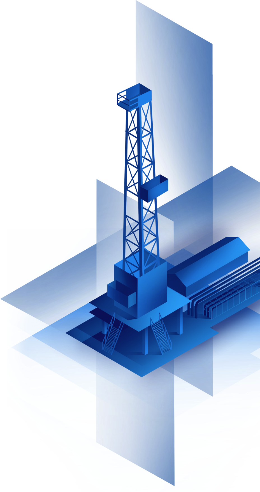

Нефть
в основе
всего
01
Двадцать первый век — эра высоких технологий. Человек научился передавать гигабайты данных за считанные секунды, пересекать полмира за пару часов и даже выращивать растения на обратной стороне Луны. Правда, для всего этого по-прежнему нужно то же, что нашим далеким предкам для решения менее технологичных задач: энергия.
Лет десять назад думали, что с развитием возобновляемых источников энергии (ВИЭ) спрос на нефть сойдет на нет, и мировая экономика будет питаться только «зеленой» энергией. Но время расставило всё по местам. Дажеветряки и солнечные батареи не могут обходиться без нефти: из ее производных состоят детали оборудования, а его доставка осуществляется с помощью топлива на основе углеводородов.
Перечень предметов, которые не могут быть заменены ВИЭ, огромен. В том числе невозможно производить ветряные турбины, солнечные батареи или гидроэлектростанции без компонентов, получаемых на основе углеводородов.
Айк Назарян
Начальник департамента развития ресурсной базы «Газпром нефть»
Доля ВИЭ
в мировом
энергопотреблении
В базовом сценарии развития энергетики от Международного энергетического агентства доля ВИЭ к 2040 году увеличится на 5%. При этом доля нефти снизится незначительно и по-прежнему будет составлять 1/3.
2018
23%
Природный газ


Ханты-Мансийский автономный округ – Югра – один из ключевых регионов нефтедобычи в России.
По оценкам экспертов, через 10 лет потребность в ВИЭ не превысит и 50% потребности человечества в нефти. «Зеленые» источники энергии, при всех своих плюсах, имеют целый ряд недостатков.
Во-первых, это пока очень дорого. Например, при строительстве ветряной электростанции необходимо учесть не только начальную стоимость, но и расходы на транспортировку и сохранение энергии. К тому же ветер дует везде по-разному и перед постройкой нужно составить карту ветров, что тоже влияет на стоимость.
Во-вторых, экологичность этих источников условна. Те же ветряки издают сильный шум и причиняют вред птицам. Другой пример — электромобили. Через несколько лет встанет вопрос утилизации отработавших аккумуляторных батарей – как это делать без вреда для экологии, пока не придумали. И это при том, что к 2040 году доля электроэнергии как источника топлива для транспорта составит не более 5%, тогда как доля нефти не упадет ниже 85%.
К тому же, сравнивая альтернативные источники энергии с углеводородами, нельзя забывать о том, что нефть, газ и продукты их переработки — это не только источники тепловой и электрической энергии, но и сырье для нефте- и газохимии. Пластики, удобрения, стройматериалы, дорожное покрытие – все это мы получаем из углеводородов.
Жидкие углеводороды и возобновляемые источники энергии впрямую практически не конкурируют.
Вроде бы парадокс, но факт: жидкие углеводороды (нефть и газовый конденсат) и возобновляемые источники энергии впрямую практически не конкурируют. Жидкие углеводороды используются в основном как топливо для транспорта (56%) и в промышленности (29%). А вот в производстве электроэнергии доля нефти не более 5%. Мы живем в период, когда разные источники энергии заняли свои ниши и не мешают друг другу. Развитие возобновляемых источников не означает отказа от нефти, которая по-прежнему стратегически важна для мировой экономики. По прогнозам экспертов, эту роль она будет играть еще много десятков лет.
Что
можно
делать
из нефти?
Только бензин. Все виды – от 76-го до суперкачественного 100-го.
Бензин и дизельное топливо. И все. Но разве этого мало? Без них никуда.
Все виды топлива, а также битумы для дорог.
Список бесконечен – от бензина до одежды и косметики и даже аспирин.
Не верно! Помимо бензина и авитоплива и битумов из нефти делают даже самые неочевидные вещи: искусственный мех и детские игрушки, тени для век и шампуни, лекарства и жевательные резинки.
Все так! Помимо бензина и авитоплива и битумов из нефти делают даже самые неочевидные вещи: искусственный мех и детские игрушки, тени для век и шампуни, лекарства и жевательные резинки.
Трудноизвлекаемые
запасы
02
Последние десятилетия добыча углеводородов становится все более сложной. Традиционные месторождения, которые человечество разрабатывало много десятков лет, почти исчерпаны. При этом труднодоступные глубокие пласты с крайне сложным геологическим строением хранят огромные объемы ТРИЗ, или трудноизвлекаемых запасов. Они почти не тронуты человеком. Чтобы добывать такую «трудную» нефть, нужны принципиально новые подходы. Подобрать технологические ключи к этой «кладовой» нам еще только предстоит.
Изменение
доли трудноизвлекаемых
запасов нефти в РФ
Термин «трудноизвлекаемые запасы» появился еще в 70-е годы прошлого века. Это запасы, особенности которых не позволяют организовать рентабельную добычу нефти с помощью прежних технологий.
Если говорить просто, то «трудной» называют нефть, добыча которой требует особых усилий, инвестиций и технологических решений. Это и нетрадиционная нефть (бажен, доманик), для которой пока нет рентабельных технологий добычи, и трудноизвлекаемая, которая находится в сложных для добычи условиях. К ним можно отнести, например, и арктическую нефть, добыча которой осложнена удаленностью месторождений и суровым климатом.
Все это ТРИЗ.
В широком смысле к трудноизвлекаемым относятся запасы нефти в низкопроницаемых коллекторах, высоковязкие нефти, остаточные запасы выработанных месторождений, а также подгазовые залежи – то есть все то, для получения чего из недр земли необходимы новые решения.

Пальяновское месторождение в ХМАО – центр тестирования технологий для разработки баженовской свиты
«Трудная» нефть, как правило, залегает глубже традиционной. Последняя скрыта в песчаных и карбонатных породах, где углеводороды покоятся условно в едином резервуаре и более доступны для добычи. Трудноизвлекаемые же зачастую находятся в разрозненных пластах, например, глин и песчаников с куда более сложной геологией.
ТРИЗ составляют примерно 65% от общего объема всех доказанных запасов нефти в России. В нашей стране доля их добычи лишь начинает нарастать. В США уже сегодня примерно 2/3 нефти добываются из сланцевых пород – они тоже относятся к нетрадиционным ресурсам.
Большинство ныне известных «трудных» месторождений были открыты еще советскими геологами в 60-е годы прошлого века. Это запасы Баженовской, Абалакской, Фроловской свит Западной Сибири, территории в Карском и Баренцевом морях, районы Сахалина. Но тогда разрабатывать их не было смысла: хватало и легкодоступной нефти, а технических ресурсов для разработки ТРИЗ не было.
Теперь все наоборот: «легкая» нефть кончается,а технологии достаточно развиты. Большие надежды российских нефтяников связаны с Баженовской свитой. Ее запасов хватит на несколько поколений. Но рентабельных технологий добычи этой нетрадиционной нефти сегодня не существует. «Газпром нефть» вплотную приблизилась к созданию рентабельных подходов для добычи баженовской нефти. И уже в 2021 году планирует начать промышленную разработку Бажена.
Однако ближайшие перспективы российской нефтедобычи связаны с освоением другого вида «трудных» запасов – с ресурсами Ачимовской толщи. Она расположена непосредственно над Баженом на глубине от 2,5 до 4 км.
По проницаемости (то есть способности проводить нефть, что крайне важно для организации добычи) она в 100 раз сложнее традиционных пород. Поэтому ее освоение требует нестандартных подходов, инвестиций в технологии.
В то же время, отмечают эксперты, ее разработка условно в те же самые 100 раз легче, чем освоение баженовской свиты. Ресурсы ачимовки настолько масштабны, что позволят поддерживать текущий уровень добычи на протяжении многих лет.
Сегодня доля трудноизвлекаемой нефти превышает 60% в общем объеме доказанных запасов в России. В нераспределенном фонде практически не осталось месторождений «легких» углеводородов. И если десятилетия назад стимулов заниматься дорогостоящей разработкой таких сложных ресурсов в стране не было, то сегодня мы отчетливо понимаем: будущее отрасли связано с освоением «трудной» нефти.
Ачимовская толща, геологические запасы которой могут достигать 60 млрд тонн нефти, является одним из основных ее источников. Современный уровень развития российских технологий открывает отечественным нефтегазодобывающим компаниям доступ к этим ресурсам. Однако запуск полномас-штабной разработки ачимовки еще впереди.
Это задача общегосударственного масштаба.
Ее решение позволит заместить сокращающуюся добычу традиционной нефти, сохранить налоговые поступления в бюджет, месторождения и рабочие места. Минэнерго России считает важным вовлечение в разработку всех ТРИЗ на территории РФ, включая проекты освоения ачимовских залежей.
Павел Юрьевич Сорокин
Заместитель Министра энергетики России
Итак, эпоха «легкой» нефти позади и добыча углеводородов становится все сложнее. Известно, что первую в мире нефтяную скважину пробурили российские специалисты в Баку в 1846 году. Ее глубина составила всего 21 метр. А на каких глубинах нефть добывают сегодня?
Оказывается, нет! Последние годы добыча становится сложнее, а глубина залежей все больше. Сегодня средний показатель для России составляет около 3 км! В случае с Ачимовской толщей добыча может вестись и на глубинах около 5 км. При этом «проходка», то есть длина самого ствола скважины (он уходит под землю под углом и с изменением траектории), может превышать семь и даже более километров.
Верно! Последние годы добыча становится сложнее, а глубина залежей все больше. Сегодня средний показатель глубины залегания разрабатываемых в России пластов составляет около 3 км! В случае с Ачимовской толщей нередко добыча может вестись и на глубинах около 5 км. При этом «проходка», то есть длина самого ствола скважины (он уходит под землю под углом и с изменением траектории), может превышать семь и даже более километров.
Нефтяная
сокровищница
Сибири
03
Ачимовские отложения расположены практически под всей территорией Западной Сибири. Общая площадь ачимовских песчаников превышает 920 тыс. кв. км – это примерно две территории Испании или четыре – Великобритании.
Разработка ачимовки долгое время рассматривалась только теоретически. Но сокращение традиционных запасов заставило нефтяников обратиться и к этим сложным залежам.
1,4
млрд тонн
газового
конденсата
Ачимовская толща – это более 100 залежей нефти, газа, конденсата, многие из которых относятся к крупным, а в Самбургско-Уренгойской зоне – к гигантским. Ресурсный потенциал толщи оценивается в 66 млрд тонн нефтяного эквивалента. Геологические запасы – в 10,4 млрд тонн нефти, 4,4 трлн кубометров газа и 1,4 млрд тонн газового конденсата.
Освоение трудноизвлекаемых запасов углеводородов – не только стратегическая ставка «Газпром нефти», но и наша ежедневная реальность. Сегодня доля ТРИЗ в балансе нашей текущей добычи составляет около 30%, а в структуре запасов – порядка 40%. Много лет мы успешно добываем нефть на арктическом шельфе, из палеозойских залежей и оторочек.
Наше дочернее общество – «Газпромнефть – Технологические партнерства» – является оператором национального проекта по созданию рентабельных технологий разработки баженовской свиты. Одним из важнейших и при этом понятных для нас видом «трудных» ресурсов является ачимовка. «Газпром нефть» первой в отрасли создала концептуальную геологическую модель Ачимовской толщи на площади в 1,5 млн кв. км.
Уже сегодня мы отрабатываем технологии, которые в ближайшей перспективе позволят начать полномасштабную разработку этих залежей. Запуск проекта важен для развития всей отрасли, так как не просто обеспечивает доступ к масштабным запасам нефти, но и дает импульс развитию российским технологиям. Созданные нами решения будут востребованы и для разработки других «трудных» запасов по всей России.
Вадим Яковлев
Заместитель генерального директора по разведке и добыче «Газпром нефти»
183тыс
кв. км
34,4млрд тонн
нефти и газа
Значительная часть запасов ачимовской толщи сосредоточена в Ямало-Ненецком автономном округе.

Мировая нефтедобыча уже смещается в сторону «трудных» углеводородов. А где в мире сосредоточены основные запасы нетрадиционной нефти?
В США, всем известно про сланцевую революцию
В Объединенных Арабских Эмиратах, это один из признанных лидеров мирового нефтяного рынка
В России, площадь большая, статистически и вероятность выше!
В Китае, вторая экономика мира и ресурсная база одна из крупнейших
Основные запасы «трудной» нефти сосредоточены в России. Крупнейший источник нетрадиционных углеводородов в мире – баженовская свита Западной Сибири. США на втором месте. Китай на третьем, Аргентина на четвертом. Ливия замыкает пятерку. ОАЭ не входят в этот список, так как для них характерны огромные запасы именно традиционной нефти.
Основные запасы «трудной» нефти сосредоточены в России. Крупнейший источник нетрадиционных углеводородов в мире – баженовская свита Западной Сибири. США на втором месте. Китай на третьем, Аргентина на четвертом. Ливия замыкает пятерку. ОАЭ не входят в этот список, так как для них характерны огромные запасы именно традиционной нефти.